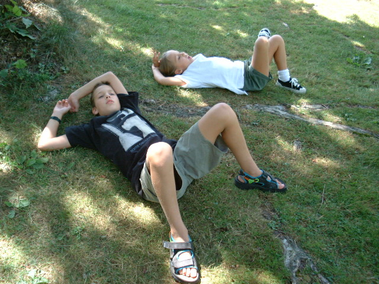
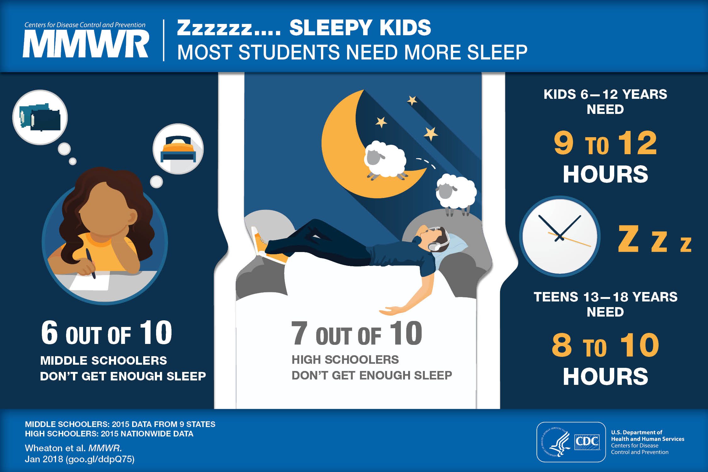
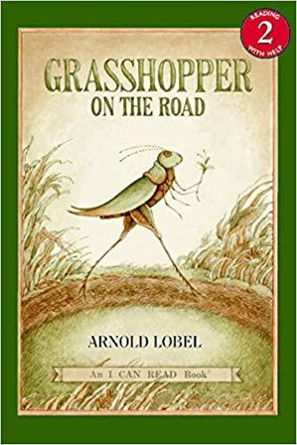
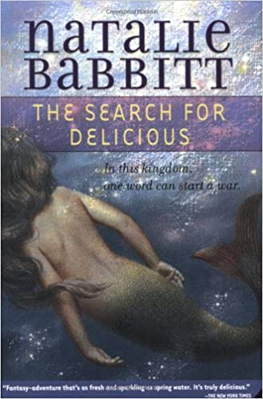
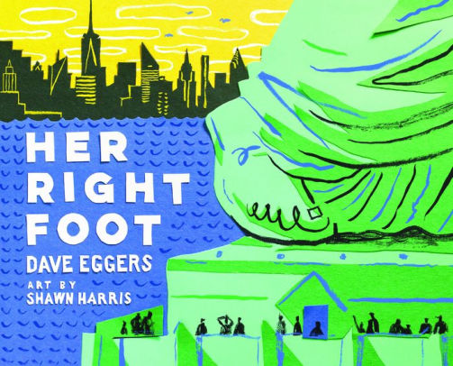
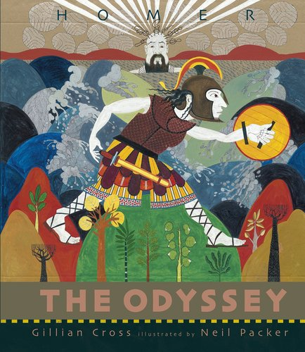
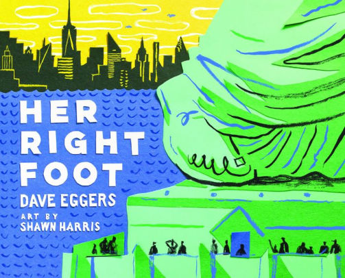
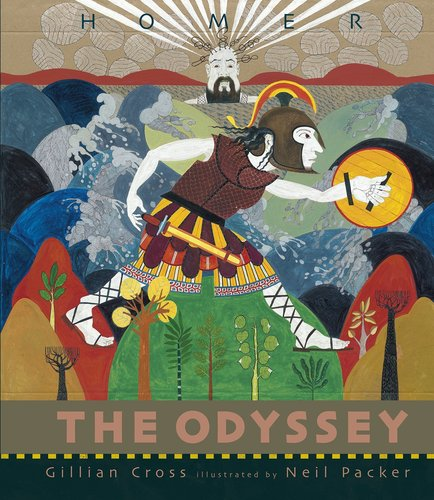

Yum: A Bite-Sized and Nourishing Homeschooling Strategy for All Ages
By Sophia Sayigh
Are you struggling with the kids home full-time since schools closed, or were already homeschooling but are feeling the effects of being cooped up without the usual access to the whole wide world? Everyone, school families and homeschoolers alike, are feeling the strain of not being able to get together with friends and loved ones. To you I offer this strategy to reset life at home under the stay-at-home advisory.
Take what you like, and leave the rest. There is not one right way to homeschool. In fact, that is one of homeschooling’s strengths—flexibility to meet the varied needs of individual members of a family. If what you’re doing is working for you, stop reading and carry on!
A couple of things to acknowledge that make school different from learning at home:
- A lot of a day at school is filled with classroom management, not something a parent at home with their own kids needs to spend time on. So let’s slash those six hours a day to 90 minutes. Next, let’s assume those 90 minutes of “structured learning”* can happen anytime, day or night, weekday or weekend, and that on one day you can spend more than 90 minutes, and on another day you might spend none of the 90 allocated minutes. You can do all 90 minutes in one sitting so to speak, or split them up over the course of several days.
- School divides learning into subjects because school needs to standardize curriculum and track the progress of a classroom of students. But life is not divided up into subjects—everything is interconnected—so most activities encompass a range of subjects. For example, cooking can include reading a recipe, measuring ingredients, science of heat, cultural history of a recipe, not to mention art, hands-on skills, and so on.
The 90 minute strategy includes:
- Thirty minutes of reading aloud from picture books or chapter books or classic literature or nonfiction books or anything really (cookbooks, instructions, newspaper articles). Student’s choice. During this time kids can sit on a lap and listen, or draw, act out the story, do stretches or somersaults on the floor, practice fingering on a guitar, whatever floats their boat. Feel free to stop and discuss as you go, or answer questions when they come up. It is fine to reread a book many times, or access new reads from your public library’s eBook collection. Oh, and graphic novels and listening to audiobooks count as reading.
- Thirty minutes of playing a game. A board or card game can be completed in one sitting, or you can leave it set up and return to it for days or even weeks. Dungeons and Dragons, anyone? Many parlor games don’t require any equipment at all. Or maybe outside yard time, a sidewalk game, or a brisk walk is called for to blow off some steam (given you can maintain social distancing).
- Thirty minutes of making something, or learning a new skill. Maybe this will be cooking or baking. Maybe it will be learning to sew. Maybe it will be building. Maybe it will be playing music or singing together. Maybe it will be doing the laundry or starting seeds for the garden. Share an interest or skill you have, or ask your child to teach you something.
The 90 minutes is meant to be spent all together, not per child. Aim to interest the oldest child, and rest assured the younger ones will be fine coming along for the ride. And if someone doesn’t want to take part, don’t push it. No power struggles.
If you find that in the course of reading or cooking or sewing, your child catches a bug and wants to read all of a series, or invent their own recipes, or learn about the science of cooking, or contribute to (or start!) a community drive to donate homemade face masks, or in any way dig more deeply into a subject, let them run with it! And if they tire of it, just go back to your 90 minutes and see what arises next.
Leave available at all times whatever supplies you have on hand for art, music, and reading lying about. Audiobooks are great accompaniments to crafting or building, as are podcasts. Of course have available games, puzzles, dress up, and toys as well, and let free play rule! Conversation that happens between family members over the course of a day counts for a lot. And another pastime, daydreaming, is underrated.
Try to be flexible, and if you realize anyone is stressed, stop and breathe. If the strategy is not working, change the strategy, as many times as you need to. If at the end of a week you haven’t amassed the equivalent of 90 minutes a day of these activities, wipe the slate clean and start over. And take note—if it works to read for all 90 minutes and not play games or make things, go with that flow. If you can only manage 30 or 60 minutes, that’s fine. Be kind to yourself. This framework is meant to help make your homeschooling easier and less stressful, not more.
Some of the millions of possible ways this could play out:
- Family A wakes up, completes 90 minute schedule, rest of the day is spent as each wishes.
- Family B members wake up at different times, eat breakfast randomly, pursue varying interests or obligations over the course of the day, make dinner together, play a game after dinner, and then read aloud before bed.
- Family C wakes up, makes and eats breakfast together, disperses to work or play, reconvenes to eat lunch and play a game, disperses to work and play, reads aloud before bed.
- Family D members wake up at different times, eat breakfast randomly, everyone gets busy and never convenes to read or make anything, or play a game. Don’t worry about it and see what tomorrow brings. It is fully possible that Family D’s kids are doing just fine without the planned 90 minutes, but having a soft spot for reading aloud, I hope they fit that in somewhere.
At the end of a day or week, if you have the energy for it, jot down some of what you’ve observed your kids engaging in. How are they spending their time? What are their interests? What habits have they developed? It will be fun and eye opening to look back on these notes.
I am guessing that your children, if they have forgotten, will rediscover their innate ability to learn voraciously, and you might too! Embrace this change as it happens. When school starts again, I won’t be surprised if you find that having had the experience of learning at home will make school more productive and less stressful. Just knowing school is a choice, and homeschooling an option, can have that effect.
* How is structured learning
defined for public school? From the Massachusetts DESE: Structured learning time shall mean time during which students are engaged in regularly scheduled instruction, learning activities, or learning assessments within the curriculum for study of the 'core subjects' and 'other subjects.' In addition to classroom time where both teachers and students are present, structured learning time may include directed study, independent study, technology-assisted learning, presentations by persons other than teachers, school-to-work programs, and statewide student performance assessments.
Translation: pretty much everything constitutes structured learning time.
If your child is engaged in an activity and is learning from it, it counts. And I challenge you to find an activity that a child doesn’t learn from.
A note about teens:
Teens can most likely complete any academics they need for their college resumés in about 20% of their time. That leaves 80% of their time to spend as they please. Many teens may spend a lot of that time on social media or gaming. Try not to stress out if that is the case at your house. Other endeavors will take root if a teen becomes bored with life online. And if a teen does not become bored, great! It's possible their brain is being exercised.
And, while I’m not pushing to spend a lot of time online, if it’s where your teens are, bookmark Open Culture, an amazing resource for “free cultural and educational media.” Wouldn’t be so bad to fall down any of the rabbit holes there.
Don’t worry about teens “falling behind.” When school starts up again, they will all be in the same boat. If my reassurances aren’t doing the trick, read College Without High School by Blake Boles.
One last word, let them sleep in.
Content source: National Center for Chronic Disease Prevention and Health Promotion, Division of Population Health
Some Favorite Read-Alouds
  



Every Amazon.com purchase that starts on the AHEM website helps support AHEM.